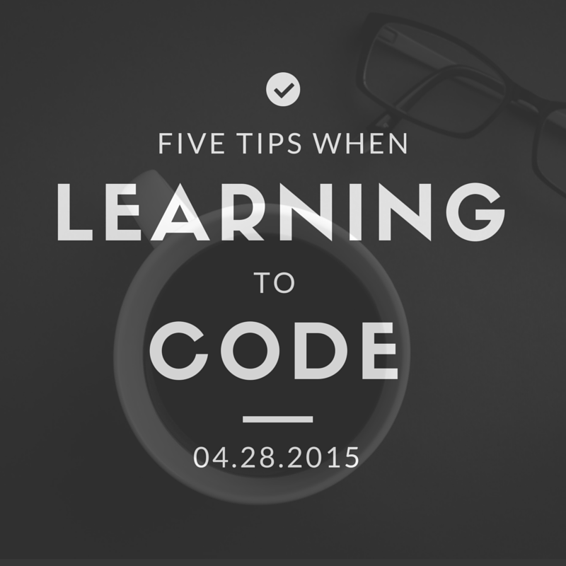
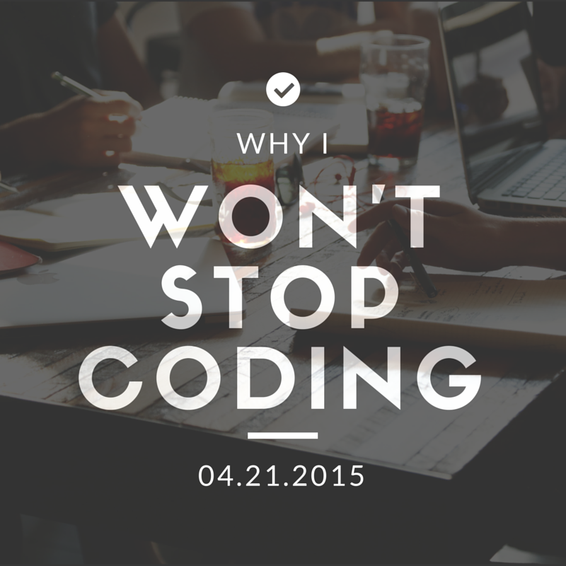
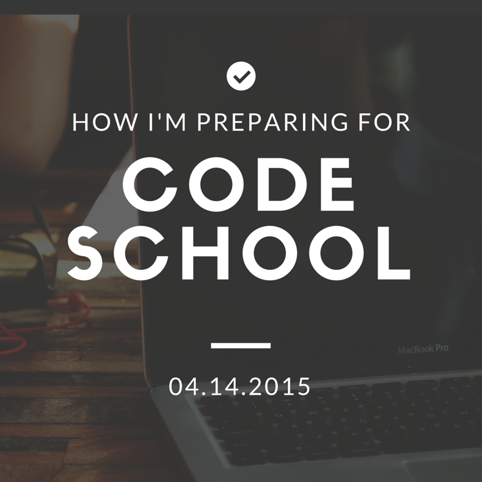

Five Tips When Learning How to Code
By John Schnettgoecke, Front-End Engineering Student at The Iron Yard Greenville
I’ve spent the first quarter of this year aimlessly wandering the interwebs, coffee in one hand, eyes and glasses fixed intently on my computer screen, Googling things like, “coding tips” or “tips for coding newbies” or “learning to code” or “help me code.”
Why I Won't Stop Coding
By John Schnettgoecke, Front-End Engineering Student at The Iron Yard Greenville
Learning is the most powerful drug on the planet. Unfortunately, in my opinion, there aren’t enough users. It’s a shame, really. Learning messes with your head, it makes you see incredible things, and it transports you to far-off worlds that once seemed all but inaccessible.
How I'm Preparing for Code School
By John Schnettgoecke, Front-End Engineering Student at The Iron Yard Greenville
I’m going to code school in two and a half weeks. Part of my preparation efforts include the usual — all kinds of reading, mandatory pre-work, and self-study in the form of online tutorials and repeated late-night code failures. That’s not enough, though.